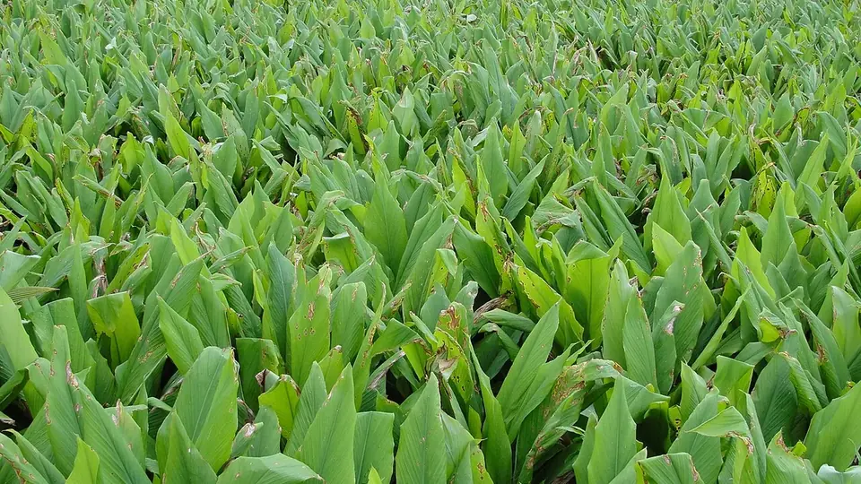

నిజామాబాద్ పసుపు — పొలం నుంచి పాలిష్ వరకు
Nizamabad Turmeric — Field to Polish
చాలా మంది రైతులు పసుపు పండించడంలో శ్రద్ధ పెట్టి, ఉడకబెట్టడం-ఆరబెట్టడంలో చిన్న పొరపాట్లతో ధర కోల్పోతారు.
✍️ Kunal Rajput — KrashiMitra⏱️ 8 నిమిషాల చదువు📅 అక్టోబర్ 2026

పసుపు పంట. ఆకులు ఎండిపోయినప్పుడు తవ్వకానికి సిద్ధం.
పసుపు — ఒక్క చూపులో
🔥
మెత్తబడే వరకు
ఉడకబెట్టడం
☀️
పట్టాపై
ఆరబెట్టడం
🏛️
2025
పసుపు బోర్డు, నిజామాబాద్
📖
పరిచయం
నిజామాబాద్, ఆర్మూర్, జగిత్యాల, నిర్మల్, వరంగల్ — తెలంగాణలో పసుపు అంటే ఒక పంట
మాత్రమే కాదు, కుటుంబాల ఏడాది ఆదాయం. ఆంధ్రప్రదేశ్లో దుగ్గిరాల, కడప ప్రాంతాలూ పసుపుకు పేరు.
దేశంలో పసుపు ఉత్పత్తిలో తెలుగు రాష్ట్రాలు ముందు వరుసలో ఉంటాయి, మరియు 2025లో
జాతీయ పసుపు బోర్డు ప్రధాన కార్యాలయం నిజామాబాద్లో ఏర్పాటైంది.
అక్టోబర్లో పొలంలో పసుపు పెరుగుతున్న దశలో ఉంటుంది. ఇప్పుడు చేసే పనులు దుంపల సైజును, తర్వాత
చేసే ఉడకబెట్టడం, ఆరబెట్టడం, పాలిష్ మార్కెట్ ధరను నిర్ణయిస్తాయి. చాలా మంది రైతులు పండించడంలో
శ్రద్ధ పెట్టి, క్యూరింగ్ (ఉడకబెట్టి ఆరబెట్టడం)లో పొరపాట్లు చేసి ధర కోల్పోతారు. ఈ
వ్యాసం పొలం నుంచి మార్కెట్ వరకు ఆ ప్రయాణాన్ని వివరిస్తుంది.
ప్రకటన
🌿
అక్టోబర్లో పొలంలో చేయాల్సిన పనులు
మట్టి ఎగదోయడం: మొక్కల మొదళ్లకు మట్టి ఎగదోస్తే దుంపలు బాగా పెరుగుతాయి, బయటకు కనిపించి ఆకుపచ్చగా మారవు.
నీరు నిలవకుండా చూడండి: వర్షాల తర్వాత పొలంలో నీరు నిలిస్తే దుంప కుళ్లు వస్తుంది. కాలువలు శుభ్రంగా ఉంచండి.
ఆకు మచ్చ, దుంప కుళ్లుపై నిఘా: లక్షణాలు కనిపిస్తే వెంటనే మీ కృషి విజ్ఞాన కేంద్రం (KVK) లేదా ఉద్యాన అధికారిని సంప్రదించండి.
ఎరువులు: ఏ ఎరువు ఎంత వేయాలో నేల ఆరోగ్య కార్డు (సాయిల్ హెల్త్ కార్డ్) లేదా KVK సలహాతో నిర్ణయించండి.
💡
పసుపు ధర దుంపలోని కుర్కుమిన్ శాతం, రంగు, సైజుపై ఆధారపడుతుంది. కుర్కుమిన్
ఎక్కువగా ఉండే రకాలకు ఔషధ, సౌందర్య పరిశ్రమల నుంచి ప్రత్యేక గిరాకీ ఉంటుంది.
🌱
రకాలు — దిగుబడితో పాటు రంగు కూడా ముఖ్యం
తెలంగాణలో చాలా మంది రైతులు తరతరాలుగా వస్తున్న ఆర్మూర్ స్థానిక రకాన్ని సాగు చేస్తారు.
ఆంధ్రప్రదేశ్లో దుగ్గిరాల రకం పేరుపొందింది. కోళికోడ్లోని భారతీయ సుగంధ ద్రవ్యాల
పరిశోధన సంస్థ (IISR) విడుదల చేసిన ప్రతిభ, ప్రగతి వంటి మెరుగైన రకాలు అధిక దిగుబడి
మరియు మంచి కుర్కుమిన్ కోసం పేరుపొందాయి; తమిళనాడు నుంచి వచ్చిన సేలం రకాన్నీ కొందరు సాగు చేస్తారు.
కొత్త రకం వేసే ముందు, అదే రకానికి మీ మార్కెట్లో కొనుగోలుదారులు ఉన్నారో లేదో తెలుసుకోండి. మీ
ప్రాంతానికి సరిపోయే రకం, విత్తన దుంపలు ఎక్కడ దొరుకుతాయో కృషి విజ్ఞాన కేంద్రం లేదా ఉద్యాన శాఖను
అడగండి. విత్తన దుంపలు ఆరోగ్యంగా, కుళ్లు లేకుండా ఉండటం రకం ఎంత ముఖ్యమో అంతే ముఖ్యం.
🔥
క్యూరింగ్ — ఉడకబెట్టడం నుంచి పాలిష్ వరకు
జనవరి-మార్చిలో ఆకులు ఎండిపోయి పంట తవ్వకానికి సిద్ధమవుతుంది. తవ్విన పచ్చి పసుపును నేరుగా
అమ్మితే ధర తక్కువ. మార్కెట్కు వెళ్లే పసుపు ఈ దశలను దాటుతుంది:
శుభ్రం చేయడం: తవ్విన దుంపల నుంచి మట్టి, వేర్లు తొలగించి, కొమ్ములు (వేళ్లు) మరియు గుండ్లు (తల్లి దుంపలు) వేరు చేయండి. రెండూ వేర్వేరుగా ఉడుకుతాయి.
ఉడకబెట్టడం: దుంపలు మెత్తబడే వరకు నీటిలో ఉడకబెట్టాలి — వేలితో నొక్కితే లొంగేలా, పుల్లతో గుచ్చితే సులభంగా దిగేలా. తక్కువ ఉడికితే రంగు రాదు; ఎక్కువ ఉడికితే రంగు, నాణ్యత పాడవుతాయి. ఆవిరి బాయిలర్లతో ఉడకబెడితే సమానంగా ఉడుకుతుంది, కట్టెలు ఆదా అవుతాయి.
ఆరబెట్టడం: ఉడికిన దుంపలను శుభ్రమైన కళ్లం లేదా పట్టాలపై పలుచని పొరగా పరచి, పూర్తిగా గట్టిపడే వరకు ఎండలో ఆరబెట్టాలి. రాత్రి కప్పండి.
పాలిష్: ఆరిన దుంపల పైపొర, ముడతలు తొలగించడానికి పాలిషింగ్ డ్రమ్ ఉపయోగిస్తారు. పాలిష్ చేసిన పసుపు మెరుస్తుంది, మంచి ధర వస్తుంది.
గ్రేడింగ్: కొమ్ములు, గుండ్లు, విరిగిన ముక్కలు వేరువేరుగా సంచుల్లో నింపండి.
ప్రకటన
📊
మంచి క్యూరింగ్ vs చెడు క్యూరింగ్
అంశం
✅ సరైన పద్ధతి
❌ పొరపాటు
ఉడకబెట్టడం
మెత్తబడే వరకు, సమానంగా
తక్కువ లేదా ఎక్కువ ఉడకడం
ఆరబెట్టడం
పట్టాపై పలుచని పొర, పూర్తిగా గట్టిగా
నేలపై, మందపాటి కుప్పలో
రంగు
ప్రకాశవంతమైన పసుపు-నారింజ
నల్లబడిన, మసకబారిన రంగు
గ్రేడింగ్
కొమ్ములు, గుండ్లు వేరుగా
అన్నీ కలిపి ఒకే సంచిలో
🌱
విత్తన దుంపల నిల్వ
వచ్చే ఏడాది విత్తనం కోసం ఆరోగ్యమైన, కుళ్లు లేని దుంపలను పంట తవ్వేటప్పుడే వేరు చేయండి. సంప్రదాయంగా
రైతులు వీటిని నీడలో తవ్విన గుంతల్లో, ఆకులతో కప్పి, గాలి ఆడేలా నిల్వ చేస్తారు. నిల్వలో మధ్యమధ్యలో
తనిఖీ చేసి, కుళ్లిన దుంపలు కనిపిస్తే తీసేయండి. విత్తన శుద్ధి అవసరమా, ఏ పద్ధతి అనేది KVK సలహాతో చేయండి.
💰
అమ్మకం
నిజామాబాద్ మార్కెట్ యార్డు తెలంగాణలో పసుపుకు ప్రధాన మార్కెట్. ఆ రోజు ధరలు చూసి సరుకు తీసుకెళ్లండి.
e-NAM: ఆన్లైన్ వేలం ద్వారా ఎక్కువ మంది కొనుగోలుదారులు పోటీ పడే అవకాశం.
పసుపు బోర్డు: బోర్డు కార్యక్రమాలు, సేవల తాజా సమాచారం కోసం అధికారిక ప్రభుత్వ వెబ్సైట్ చూడండి. KrashiMitra ఒక ప్రైవేట్ వెబ్సైట్.
నిల్వ చేసి అమ్మకం: బాగా ఆరిన, పాలిష్ చేసిన పసుపు ఎక్కువ కాలం నిల్వ ఉంటుంది — ధర చూసి దశలవారీగా అమ్మవచ్చు.
విలువ జోడింపు: కొందరు రైతులు, రైతు ఉత్పత్తిదారుల సంఘాలు (FPO) పసుపు పొడి తయారు చేసి ప్యాక్ చేసి అమ్ముతారు. ఆహార పదార్థంగా అమ్మాలంటే FSSAI నమోదు లేదా లైసెన్స్ అవసరం — మీకు ఏ విభాగం వర్తిస్తుందో FSSAI అధికారిక వెబ్సైట్లో తెలుసుకోండి.
🚫
ఈ తప్పులు చేయకండి
పొలంలో నీరు నిలవడం — దుంప కుళ్లు.
కొమ్ములు, గుండ్లు కలిపి ఉడకబెట్టడం — ఒకటి తక్కువ, ఒకటి ఎక్కువ ఉడుకుతుంది.
నేలపై ఆరబెట్టడం — మట్టి, బూజు, తక్కువ ధర.
సగం ఆరిన పసుపు నిల్వ — బూజు పట్టి పూర్తి సరుకు పాడవుతుంది.
రంగు కోసం కృత్రిమ పదార్థాలు కలపడం — ఆహార భద్రత నిబంధనలకు విరుద్ధం, ఆరోగ్యానికి హానికరం.
🗓️
పసుపు క్యాలెండర్
సమయం
ముఖ్యమైన పని
మే-జూన్
విత్తన దుంపలు నాటడం
జూలై-అక్టోబర్
కలుపు, మట్టి ఎగదోయడం, నీటి పారుదల, రోగాలపై నిఘా
నవంబర్-డిసెంబర్
బాయిలర్, పట్టాలు, పాలిషింగ్ డ్రమ్ సిద్ధం చేయడం
జనవరి-మార్చి
తవ్వకం, విత్తన దుంపల ఎంపిక, ఉడకబెట్టడం, ఆరబెట్టడం
మార్చి-మే
పాలిష్, గ్రేడింగ్, మార్కెట్లో అమ్మకం
✅
ముగింపు
పసుపు ధర పొలంలో పెరిగే దుంపతో మొదలై, బాయిలర్, కళ్లం, పాలిష్ డ్రమ్లో పూర్తవుతుంది. మూడు విషయాలు:
పొలంలో నీరు నిలవనీయవద్దు, సరిగ్గా ఉడకబెట్టి పట్టాలపై ఆరబెట్టండి, మరియు
గ్రేడింగ్ చేసి అమ్మండి.
బంగారు రంగు పసుపుకు బంగారు ధర — అది క్యూరింగ్లోనే వస్తుంది.
ప్రకటన
❓
తరచుగా అడిగే ప్రశ్నలు
1పసుపు తవ్వకం ఎప్పుడు?
తెలుగు రాష్ట్రాల్లో పసుపు సాధారణంగా జనవరి నుంచి మార్చి మధ్య తవ్వుతారు. ఆకులు పూర్తిగా ఎండిపోయినప్పుడు పంట తవ్వకానికి సిద్ధమైనట్లు గుర్తు.
2turmeric boiling in telugu — పసుపును ఎంతసేపు ఉడకబెట్టాలి?
సమయం కంటే దుంప మెత్తబడటమే ముఖ్యం — వేలితో నొక్కితే లొంగేలా, పుల్లతో గుచ్చితే సులభంగా దిగేలా ఉండాలి. కొమ్ములు, గుండ్లు వేర్వేరుగా ఉడకబెట్టండి; ఎక్కువ ఉడికితే రంగు పాడవుతుంది.
3జాతీయ పసుపు బోర్డు ఎక్కడ ఉంది?
జాతీయ పసుపు బోర్డు ప్రధాన కార్యాలయం తెలంగాణలోని నిజామాబాద్లో 2025లో ఏర్పాటైంది. బోర్డు సేవలు, కార్యక్రమాల తాజా సమాచారం కోసం అధికారిక ప్రభుత్వ వెబ్సైట్ చూడండి.
4పసుపు ధర దేనిపై ఆధారపడుతుంది?
కుర్కుమిన్ శాతం, రంగు, సైజు, పాలిష్ మరియు తేమపై ఆధారపడుతుంది. కొమ్ములు, గుండ్లు వేరుగా గ్రేడింగ్ చేసిన పసుపుకు మంచి ధర వస్తుంది.
5పసుపులో దుంప కుళ్లు ఎందుకు వస్తుంది?
ప్రధాన కారణం పొలంలో నీరు నిలవడం. వర్షాల తర్వాత కాలువలు శుభ్రంగా ఉంచి నీరు బయటకు పోయేలా చూడండి. లక్షణాలు కనిపిస్తే KVK లేదా ఉద్యాన అధికారిని సంప్రదించండి.
6పసుపు విత్తన దుంపలను ఎలా నిల్వ చేయాలి?
ఆరోగ్యమైన, కుళ్లు లేని దుంపలను నీడలోని గుంతల్లో ఆకులతో కప్పి గాలి ఆడేలా నిల్వ చేస్తారు. మధ్యమధ్యలో తనిఖీ చేసి కుళ్లిన దుంపలు తీసేయండి.
🌾
KrashiMitra.in — మీ నమ్మకమైన వ్యవసాయ నేస్తం
మార్కెట్ ధరలు, ప్రభుత్వ పథకాలు, విత్తనాలు-ఎరువుల సమాచారం, పంట తెగుళ్లకు పరిష్కారం — అన్నీ ఒకే చోట.